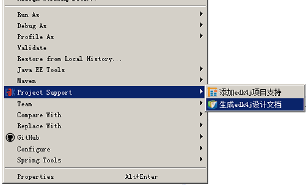

96.1、如何使用edk4j自带文档生成器
启动文档生成器
开始生成
（1）右键项目
（2）点击菜单“Project Support -> 生成edk4j设计文档”

（1）文档为html网页格式；
（2）文档包括：项目概要、平台及业务规则配置说明、交易索引、交易明细
（3）交易明细功能中，详细说明了交易的概要信息、api配置、输入、输出、业务逻辑信息
（4）可根据需要，将html中的内容复制提取到需要的word文档中